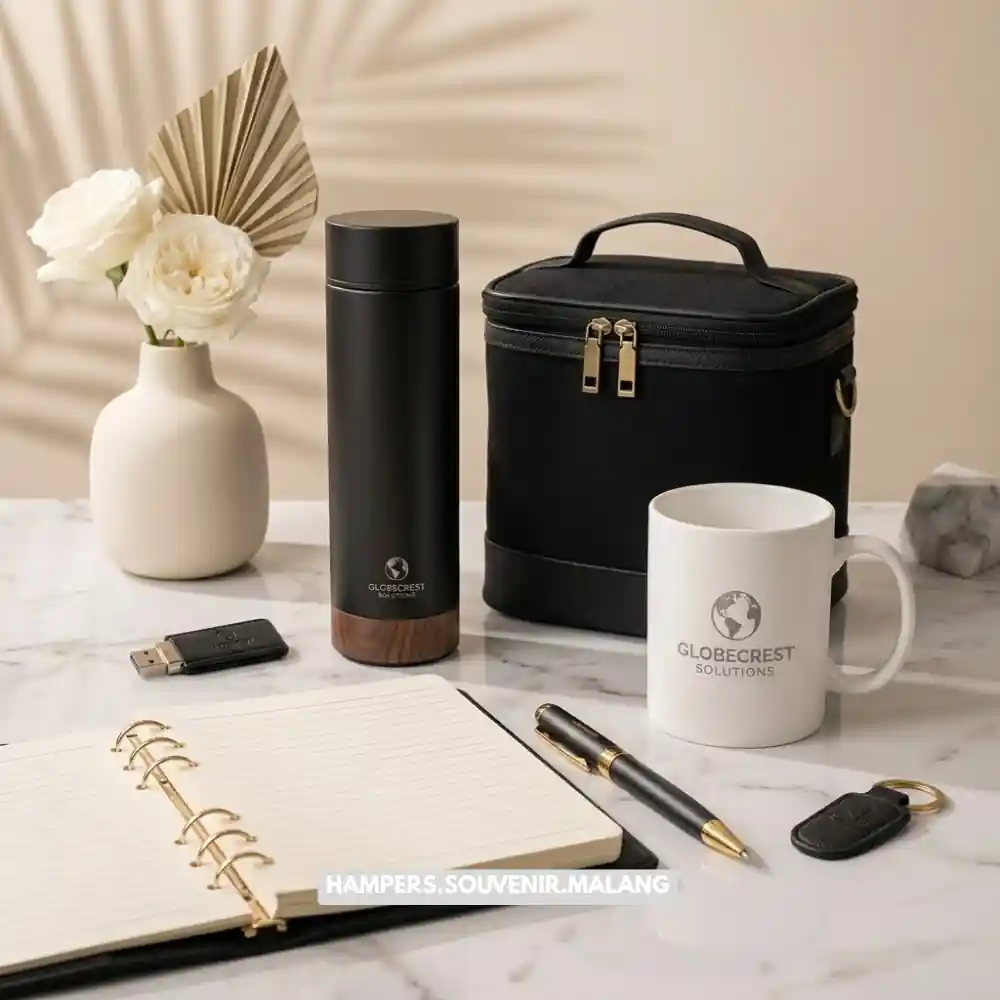

Vendor hampers kantor Malang adalah penyedia jasa parcel dan gift box korporat di wilayah Malang yang melayani kebutuhan perusahaan untuk momen tertentu seperti Lebaran, Natal, ulang tahun perusahaan, hingga apresiasi klien dan karyawan.
- Vendor hampers kantor melayani pembuatan parcel dalam jumlah banyak dengan standar kualitas dan pengemasan yang konsisten.
- Pemilihan vendor yang tepat memengaruhi ketepatan waktu pengiriman, kualitas isi, dan citra perusahaan di mata karyawan atau klien.
- Harga hampers kantor di Malang bervariasi tergantung isi, kemasan, jumlah pesanan, dan tingkat kustomisasi.
- Vendor lokal di Malang umumnya lebih fleksibel untuk pengiriman dalam kota dan pengambilan mendadak dibanding vendor luar kota.
- Perusahaan sebaiknya memesan lebih awal terutama menjelang musim ramai seperti Lebaran dan Natal.
Apa Itu Vendor Hampers Kantor?
Vendor hampers kantor adalah usaha atau bisnis yang secara khusus menyediakan jasa penyusunan, pengemasan, dan distribusi hampers dalam skala korporat, biasanya untuk kebutuhan karyawan, klien, mitra bisnis, atau relasi perusahaan lain.
Berbeda dengan toko parcel retail biasa, vendor hampers kantor umumnya sudah terbiasa menangani pesanan dalam jumlah besar, kebutuhan branding perusahaan pada kemasan, serta jadwal pengiriman yang ketat sesuai kalender kerja kantor.
Layanan ini banyak dibutuhkan menjelang hari raya keagamaan, akhir tahun, ulang tahun perusahaan, peluncuran produk, atau sebagai bentuk apresiasi kepada karyawan dan mitra bisnis.
Di Malang, permintaan terhadap vendor hampers kantor cenderung meningkat setiap menjelang Lebaran dan Natal, seiring dengan tradisi perusahaan memberikan bingkisan kepada karyawan dan klien sebagai bagian dari budaya kerja dan hubungan bisnis yang berkelanjutan.
Baca Juga: Hampers Kantor Malang, Panduan Lengkap Memilih dan Memesan
Mengapa Perusahaan di Malang Membutuhkan Vendor Hampers Kantor?
Perusahaan membutuhkan vendor hampers kantor karena penyusunan parcel dalam jumlah besar membutuhkan waktu, tenaga, dan konsistensi kualitas yang sulit dipenuhi jika dikerjakan secara internal oleh staf kantor biasa.
Beberapa alasan utama perusahaan di Malang menggunakan jasa vendor hampers kantor antara lain:
- Efisiensi waktu, karena tim internal tidak perlu mengurus pengadaan barang, packing, hingga pengiriman satu per satu.
- Konsistensi kualitas dan tampilan, sehingga setiap hampers yang diterima karyawan atau klien memiliki standar yang sama.
- Kemudahan kustomisasi logo, kartu ucapan, atau warna kemasan sesuai identitas brand perusahaan.
- Fleksibilitas jumlah pesanan, mulai dari puluhan hingga ratusan hampers sekaligus.
- Dukungan pengiriman ke banyak alamat berbeda dalam satu wilayah kota.

Bagaimana Cara Memilih Vendor Hampers Kantor yang Terpercaya di Malang?
Cara memilih vendor hampers kantor yang terpercaya di Malang adalah dengan memeriksa portofolio, ulasan pelanggan sebelumnya, kejelasan harga, serta kemampuan vendor memenuhi tenggat waktu pengiriman.
Berikut beberapa kriteria yang sebaiknya diperhatikan sebelum memutuskan bekerja sama dengan sebuah vendor:
Apakah Vendor Memiliki Portofolio yang Jelas?
Vendor yang kredibel biasanya bersedia menunjukkan contoh hasil kerja sebelumnya, baik dalam bentuk foto, video, maupun testimoni dari perusahaan lain yang pernah menggunakan jasanya. Portofolio ini membantu perusahaan menilai konsistensi kualitas kemasan dan isi hampers.
Bagaimana Sistem Harga dan Penawaran Vendor?
Vendor hampers kantor yang profesional umumnya memberikan rincian harga per paket secara transparan, termasuk pilihan isi, jenis kemasan, dan biaya tambahan seperti kustomisasi logo atau kartu ucapan. Transparansi harga membantu perusahaan menyesuaikan anggaran tanpa kejutan biaya di akhir.
Apakah Vendor Dapat Memenuhi Jumlah Pesanan Besar?
Perusahaan dengan jumlah karyawan atau klien yang banyak membutuhkan vendor dengan kapasitas produksi memadai. Menanyakan pengalaman vendor dalam menangani pesanan skala besar, terutama menjelang musim ramai seperti Lebaran, penting dilakukan sejak awal.
Bagaimana Ketepatan Waktu Pengiriman Vendor?
Ketepatan waktu menjadi faktor krusial, terutama jika hampers berkaitan dengan momen tertentu seperti hari raya. Menanyakan estimasi waktu produksi dan pengiriman, serta kebijakan vendor apabila terjadi keterlambatan, dapat membantu perusahaan mengantisipasi risiko.
Apakah Vendor Menyediakan Opsi Kustomisasi?
Banyak perusahaan ingin hampers mencerminkan identitas brand melalui logo, warna, atau kartu ucapan khusus. Vendor yang fleksibel dalam hal kustomisasi umumnya lebih sesuai untuk kebutuhan korporat dibandingkan vendor yang hanya menawarkan paket standar.
Baca Juga: Cara Memilih Hampers Kantor untuk Karyawan dan Klien
Apa Saja Faktor yang Memengaruhi Harga Hampers Kantor di Malang?
Harga hampers kantor di Malang secara umum dipengaruhi oleh jenis dan jumlah isi, bahan kemasan, tingkat kustomisasi, serta jumlah total pesanan yang diminta perusahaan.
Beberapa faktor yang umum memengaruhi harga antara lain:
- Jenis isi hampers, seperti makanan kering, produk perawatan diri, merchandise, atau kombinasi beberapa kategori.
- Bahan dan model kemasan, mulai dari box karton sederhana hingga kemasan eksklusif berbahan kayu atau kain.
- Tingkat kustomisasi, termasuk cetak logo, pita khusus, atau kartu ucapan personal.
- Jumlah pesanan, karena umumnya semakin besar jumlah pesanan, harga per unit dapat lebih kompetitif.
- Biaya pengiriman, terutama jika hampers dikirim ke banyak alamat berbeda di dalam maupun luar kota Malang.
Secara umum, perusahaan disarankan meminta penawaran harga dari beberapa vendor sekaligus untuk membandingkan rasio antara harga dan kualitas sebelum menentukan pilihan akhir.
Apa Saja Jenis Hampers Kantor yang Umum Dipesan Perusahaan?
Vendor hampers kantor di Malang umumnya menyediakan beberapa kategori hampers yang disesuaikan dengan kebutuhan dan momen tertentu.
Beberapa jenis yang umum dipesan antara lain hampers Lebaran berisi makanan kering dan kurma, hampers Natal dengan nuansa merah dan hijau, hampers ulang tahun perusahaan dengan sentuhan merchandise brand, serta hampers apresiasi klien yang biasanya lebih eksklusif dari sisi kemasan dan isi.
Perusahaan juga dapat memilih hampers tematik sesuai kebutuhan acara internal, seperti hampers untuk karyawan baru, hampers ucapan terima kasih, atau hampers khusus untuk momen pensiun karyawan.
Baca Juga: Rekomendasi Isi Hampers Kantor yang Praktis dan Berkesan
Apa Saja Kesalahan Umum Saat Memesan Hampers Kantor?
Beberapa kesalahan umum yang sering terjadi saat perusahaan memesan hampers kantor antara lain memesan terlalu mendekati tanggal pengiriman, tidak mengecek detail isi sebelum produksi massal, serta tidak mengonfirmasi alamat pengiriman secara menyeluruh.
Kesalahan lain yang cukup sering terjadi adalah tidak menyiapkan anggaran cadangan untuk kebutuhan mendadak, seperti penambahan jumlah pesanan di menit-menit akhir, serta kurang memperhatikan daya tahan isi hampers apabila pengiriman membutuhkan waktu lebih lama dari perkiraan.
Apa Tips Agar Proses Pemesanan Hampers Kantor Berjalan Lancar?
Agar proses pemesanan hampers kantor berjalan lancar, perusahaan disarankan memesan jauh sebelum musim ramai, menyiapkan daftar alamat pengiriman lebih awal, dan melakukan konfirmasi sampel sebelum produksi dalam jumlah besar.
Beberapa tips tambahan yang dapat diterapkan:
- Tentukan anggaran per hampers sejak awal agar memudahkan diskusi dengan vendor.
- Minta contoh sampel fisik atau foto detail sebelum menyetujui produksi massal.
- Pastikan ada kesepakatan tertulis mengenai jadwal produksi dan pengiriman.
- Siapkan data alamat penerima secara rapi untuk mempercepat proses distribusi.
- Diskusikan opsi cadangan apabila salah satu bahan isi hampers mengalami kendala stok.
Bagaimana Perbandingan Vendor Lokal Malang dengan Vendor Luar Kota?
Vendor hampers kantor lokal di Malang umumnya menawarkan keunggulan dari sisi kecepatan koordinasi, kemudahan pengecekan sampel secara langsung, dan fleksibilitas pengiriman dalam kota, dibandingkan dengan vendor dari luar kota yang biasanya membutuhkan waktu pengiriman lebih lama.
Meski begitu, vendor luar kota terkadang menawarkan variasi produk yang lebih luas karena skala bisnis yang lebih besar. Perusahaan perlu mempertimbangkan prioritas antara kecepatan layanan lokal dan variasi pilihan produk sebelum menentukan vendor mana yang paling sesuai dengan kebutuhan.
Kesimpulan
Memilih vendor hampers kantor Malang yang tepat membantu perusahaan menjaga citra profesional sekaligus mempererat hubungan dengan karyawan dan klien.
Perusahaan sebaiknya memeriksa portofolio, transparansi harga, kapasitas produksi, dan ketepatan waktu pengiriman sebelum menentukan pilihan. Memesan lebih awal, terutama menjelang musim ramai, juga membantu memastikan kualitas dan ketepatan waktu tetap terjaga.
Tanya Jawab Seputar Vendor Hampers Kantor
Vendor hampers kantor adalah penyedia jasa penyusunan dan distribusi parcel dalam skala korporat untuk kebutuhan karyawan, klien, atau mitra bisnis perusahaan.
Waktu produksi bervariasi tergantung jumlah pesanan dan tingkat kustomisasi, sehingga sebaiknya dikonfirmasi langsung kepada vendor terkait, terutama untuk pesanan dalam jumlah besar.
Sebagian besar vendor hampers kantor di Malang menyediakan opsi kustomisasi logo pada kemasan atau kartu ucapan sesuai identitas brand perusahaan.
Banyak vendor hampers kantor di Malang menyediakan layanan distribusi ke beberapa alamat berbeda dalam satu wilayah kota, meski kebijakan dan biaya dapat berbeda antar vendor.
Waktu terbaik memesan hampers kantor menjelang Lebaran adalah beberapa minggu sebelum tanggal pengiriman, mengingat permintaan cenderung meningkat signifikan pada musim tersebut.

Butuh Hampers Kantor?
Solusi Hampers & Corporate Gift Kreatif di Malang Raya.
Ditulis oleh Tim Maroon Souvenir
Sahabat mahasiswa dan pelaku bisnis di Malang Raya. Berpengalaman menangani merchandise event kampus, instansi pemerintahan, dan hotel berbintang di Batu.